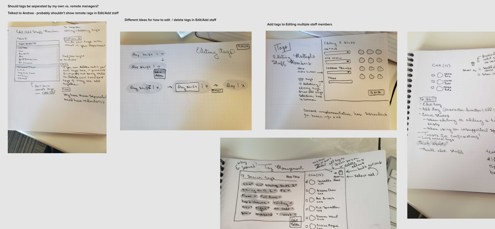

NurseGrid Mobile is the top rated and #1 downloaded app for nurses. NurseGrid Manager is the complement to NurseGrid Mobile. It provides nurse managers, schedulers, and charges a centralized tool to build schedules, fill shift vacancies, manage credentialing, centralize staffing, and approve swaps and giveaways in real time. During my tenure at NurseGrid in 2019-2020, I was the sole designer for NurseGrid Manager.
Define - Working closely with a Product Owner, we would define the problem, identify the issues affecting our users, and come up with a hypothesis that we thought would improve their experience.
Brainstorm & Design - This involved creating user flows, low fidelity mock ups, competitive analysis, referencing previous research, gathering relevant data, user outreach for exploratory questions and feedback, and meeting with key stakeholders (Product, Developers, Customer Success) for their feedback and buy-in. Then I'd write a discussion guide for usability testing.
Test it out - Using mock ups and prototypes, it was time to test out our assumptions with real users. This would either be done in an unmoderated setting by emailing them a link to a prototype and survey link. We'd also do moderated testing over Google Hangouts by having users share their computer screen as they answered questions and went through the mockups and prototypes. Every test session would have a moderator to ask questions and at least one (usually 2 or 3) observers to take notes. When users consented, we also recorded those sessions for later reference.
Design some more - After initial testing, I'd improve on my designs based on user feedback and meetings with internal stakeholders. I'd also review designs frequently with the lead Developer to ensure what I would be delivering was within scope.
Develop - Once designs were handed to a Developer, we would be in frequent contact regarding everything from what existing components to reuse, font size, color consistency, interaction design, and animation.
Iterate - Release doesn't mean it's over! Once a feature was released, we'd keep an eye out on feedback, gather insights from Google Analytics, and document in Confluence what other changes we'd like to make to the feature if we weren't tackling it right away.
One of the things I caught onto quickly was that at a company with 25 people in a chaotic start up environment, there was very little technical documentation regarding design decisions. Additionally, many of the people who made product and design-related decisions were no longer with the company. With this in mind, I lacked a lot of context why things worked a certain way, which colors and font sizes were supposed to be used, and what components and styles were considered the new standard.
One of the first projects I tackled at NurseGrid was updating the existing design system in Figma to reflect the styles and components that already existed in production and where we wanted certain styles in production to change.
Any product that has changed hands through multiple designers runs the risk of becoming a bit of a design Frankenstein. To help tame this, I held a biweekly meeting with the lead Developer called The Life Changing Magic of Tidying Up NurseGrid Manager where we would meet one on one to pinpoint areas in the app that needed consistency and updating. We worked together to unify the color palette in NurseGrid Manager to meet AA accessibility guidelines (no easy feat when we were consolidating about 17 shades of gray!), identify which components needed updating and could be reused, work together to display consistent error handling, and agree on font sizes to be used across the platform.
With an updated Figma design system and a lot of newly shared knowledge and agreements regarding product and design decisions, I knew I needed to write this all down somewhere. I chose Confluence to maintain the technical documentation portion of the Design System because that's where everyone else at the company already was. The Design System initially lived in the Design workspace, but ended up getting its own workspace as it grew over time.
The Design System included guidelines for components, accessibility, writing & tone, patterns, and layout. It was meant not only for the current design team, but any future Designers, Developers, Marketers, Product, Quality Assurance, and Customer Success. It was a living document for all internal employees to reference for any questions they had regarding things like how an empty state should be displayed, color palette, typography, and UX writing.
Fresh from my previous job that had a generous research budget, one of my biggest culture shocks at NurseGrid was wondering how we would conduct research and usability testing with no budget. With no incentives or any additional tools besides a shared company Typeform account, we had something magical: an engaged and loyal userbase eager to help shape the direction of our products.
We focused primarily on quantitative testing. We used TypeForm for survey design, which we frequently relied on for unmoderated testing with screenshots of mock ups. For moderated testing, we used Google Hangouts and asked users to share their computer screens. We also recorded these sessions for later reference. All research findings, discussion guides, and files lived in a Confluence wiki page that all employees could access.
Can I let you in on a pet peeve? I think the biggest disservice a design team can do within a company is exist quietly on their own island, only emerging from their caves to reach out to users. I'm happiest and most productive at work when bringing as many people as possible into the design process. This includes internal guerrilla testing, making research findings and the Design System accessible somewhere everyone can access like Confluence, inviting interested people to be observers at usability testing sessions, holding cross-departmental workshops, and reviewing design work with various people (from Product, Development, Quality Assurance, Marketing, Customer Success). When we have a shared understanding of our goals, how we're getting there, and why we've made certain decisions, it increases productivity and avoids departmental siloing.
"Rose is an absolutely amazing product designer and person. She is intelligent, creative, empathetic, and genuine. Give her a problem to solve and she'll do it in 5 different ways and explain her thinking succinctly and eloquently. Collaborating with her was a joy and her design feedback was always invaluable. Working with her was a pleasure and I hope to again soon."
"Rose and I were the design team at NurseGrid for 3 months; while I wasn’t her direct manager, I did take the lead on the hiring process that brought her on. In practice, I oversaw the nurse-focused products while she handled the products for the department managers.
Rose’s portfolio proved that she was talented at UI design, and her UX mindset was evident from our first conversations. She impressed members of the design, product, and engineering teams in her in-person interview by asking thoughtful questions about our users’ needs and goals.
After joining the team, she proved to be every bit as hard-working, dependable, and talented as she demonstrated in the interview. She immediately connected with members of the leadership team, Customer Success, and more to develop a holistic view of our customers. She also organized our design system to ensure that she understood the patterns that were available as she took over the ownership of NurseGrid Manager.
Rose’s impact was felt way beyond her design talents; she was a positive addition to the culture of the organization. She is an incredible collaborator who led discussions so that all perspectives were heard, and then produced the best product possible based on the abilities and constraints of the team. She also organized small group events to get to other people in the office that she didn’t have the opportunity to work with directly.
Rose’s dedication, talent, and personality make her a great addition to any design team. I can’t recommend her highly enough."
{kind=link}
{kind=link}
{kind=link}
{kind=link}
{kind=link}
{kind=link}
{kind=link}
{kind=link}